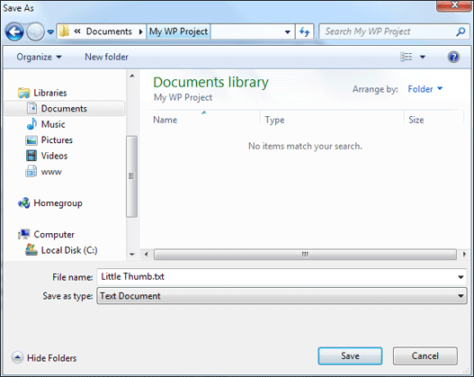
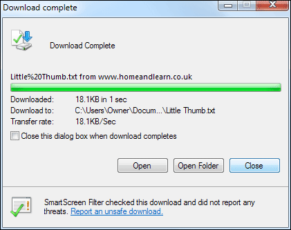
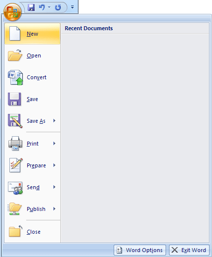
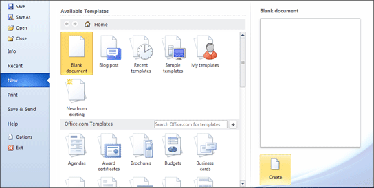

Free
computer Tutorials
|
Free
computer Tutorials
|
|
 home home |
|
|||||
Microsoft Word 2007 to 2010Downloading a Text FileIn this section, you're going to create a document with more than one page. You'll learn how to insert a file into your Word document. You'll add a header and footer to your document, and put some page numbers at the bottom. You'll also learn about Page Preview.
There is a text file we've prepared for this section called Little Thumb. It can be downloaded by clicking the link below. However, read the download instructions first before clicking the link: Get the Little Thumb text file The document above is a text file, and you need to save it to your own computer. Click the link above with your right mouse button. You'll then see a menu appear. Select Save Target As from the menu (or Save Link As if you use Firefox to browse the internet). You'll then see a dialogue box where you can choose a location on your computer to save the file:  In the image above, we're saving the file to a folder called "My WP Project", which is in the Document folder of this Windows 7 computer. You can save your file anywhere you like, just as long as you remember where! Note that the File name area above says "Little Thumb.txt". Click Save and the file will be download to your computer. You'll then see this box if you have Internet Explorer:  Click the Close button, rather than Open or Open Folder. Once you have the file you need, you can make a start. Let's see how to insert this text file into a Word document. Open a new Microsoft Word Document. If you already have Word opened,
you can click on the Office button in the top left, in Word 2007. From
the menu, select New:  Word 2010 users need to click the File tab, then the New item:  From the dialogue box that appears, choose Blank Document. Then click the Create button in the bottom right.
In this next part of this tutorial, you'll learn how to set up your page margins. How to set up the page margins--> <--Back to the Word Contents Page View all our Home Study Computer Courses
|
||||||
|